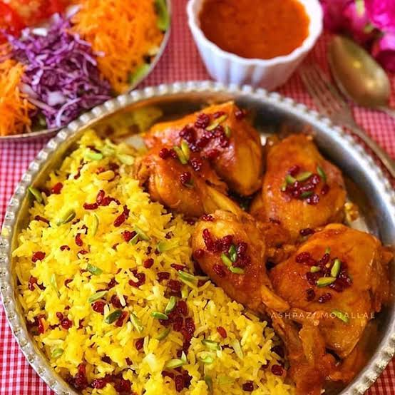

Barberry pilaf with chicken

Zereshk polo is an Iranian rice dish featuring basmati rice layered or topped with tart red barberries, and often served with saffron-infused chicken, or other meats
Ingredients
- Chicken: 4 chicken quarters (thighs and drumsticks), 1 yellow onion, 2 cloves garlic, 2 tbsp tomato paste, 1/2 tsp turmeric, salt, black pepper, cooking oil, 1 tbsp butter, and 2 tbsp bloomed saffron water
- Rice: 3 cups Basmati rice, salt, and butter or oil for cooking
- Barberry Topping: 1 cup dried barberries (zereshk), 2 tbsp butter, 1 tbsp sugar, 2 tbsp bloomed saffron water, and slivered pistachios or almonds for garnish
Steps
- Brown the Chicken: Heat oil in a deep pan and sear the chicken pieces until lightly golden on all sides, then remove and set aside.
- Make the Sauce: In the same pan, saute the diced onion and garlic until soft. Add turmeric, salt, black pepper, tomato paste, and a splash of saffron water, frying for a minute until fragrant.
- Simmer the Chicken: Return the chicken to the pan, add 1.5 cups of warm water, cover with a lid, and simmer on low heat for 45–60 minutes until the chicken is tender and the sauce is rich and thick.
- Prepare the Rice: Parboil the Basmati rice in salted water, drain, and steam it with butter and a towel-wrapped lid until fluffy.
- Prepare the Barberries: Rinse the barberries thoroughly. Saute them gently in a small skillet over low heat with butter, sugar, and saffron water for 1–2 minutes until plump and glossy (do not burn them).
- Assemble & Serve: Mix a portion of the cooked rice with some bloomed saffron and sauteed barberries. Plate the white rice, top with the bright yellow saffron rice and barberries, and serve hot alongside the poached chicken and rich tomato-saffron sauce.
Home